1. Redesign the interface to enable users to visually learn
more about potential matches rather than navigating through
text-heavy profiles.
2. If the user has linked their Instagram account to their
Dil Mil profile, display a preview of their Instagram images
upfront instead of just providing an Instagram button on their
profile.
3. If there are mutual friends, consider showcasing them upfront
rather than merely providing a mutual friend button on the profile.
Goals of the Project
The goal of the project is to address the aforementioned issues
and enhance the user experience for those utilizing the application,
including vocabulary, grammar, and spelling checks.
Direction to Solution
1. Going for a Human Centered Design and Lean UX Design approach.
2. Chalking down research questions, Ideation.
3. Making profiles to know who the end users will be.
4. Writing down screener, pre-test and post-test questionnaires.
5. Taking interviews of participants of participants.
6. Making affinity diagrams (LucidCharts), personas (Sketch, Affinity Designer, Affinity Photo),
storyboarding (Pencil, Paper), mind mapping (Coggle).
7. Chalking out the sitemaps (Sketch, Affinity Designer).
8. Sketching low-fi wireframes using paper and pencil.
9. Setting style guides to make the wireframes using Sketch or Affinity Designer.
10. Making wireframes in Axure RP8.
11. Setting style guide for high fi prototype to know typography, color palette.
12. Taking a small test to know if the app is user-friendly and if it meets the expectations
with the help of Guerrilla User Tests.
13. Make the changes in the designs as per suggestions.
14. Prototyping the final design using InVision Studio app.
15. Branding the project.
Step One
Used Human Centered Design and Lean UX Design approach.
To understand user needs through investigative and generative methods and tools.
Prepared Screener questions to know more about the participants and if they can be interviewed.
Conducted interviews of various participants from different age groups, Indian people using
the app.
Primary audience are people above the age of 20
They have used some sort of dating applications in the past
Interviewed 4 participants all males
Research Questions:
To help me understand the goal/problem statement I formed a research question
1. How to help people see mutual friends and instagram images without too many clicks?
2. How to reduce excess of information on the profile screen?
These are some initial thoughts that I had before diving into user research:
1. What kind of design do people go to to view mutual friends and instagram images?
2. Do they care about the location of the section?
3. Do they like certain design more than others? If so, why?
4. How do they know if a design or location of the design satisfies their needs?
Step Two
Contextual enquiry - Affinity diagram.
Interviews can highlight key user frustrations and feature requirements.
The data collected can help back the design decisions later on.
The interviews were structured in nature as the problem statement was already given to
hence there was no need to ask open ended questions to get answers from the participants
or to find out problems in the app.
Participants also performed a small task.
Used affinity diagrams (Lucid Charts) to analyze data and figure out user goals and frustrations.
All the important points made by participants during the interviews were grouped according
to the participants.
Eliminated repetitions and put post it notes under sub-categories that suited a particular need.
These sub-categories then formed a category that would help define a persona and scenario.
Assumptions
Business:
Dil Mil is a matchmaking dating application. This application
monetizes through additional likes, messaging, boosting, viewing
mutual friends, rewinding last views, resetting dislikes, and
setting locations. As more people use the app, it generates
more revenue through premium memberships.
Technology:
it's an application used for liking
other people's profiles to facilitate matches. It's a progressive
application, loading instantly, responding quickly to user
interactions, and providing a natural app experience. It offers
various options to explore the community and is more customizable
than other applications in the market.
Step Three
Mind mapping.
Utilizing mind mapping to comprehensively grasp the entire
process and address the What, How, and Why questions.
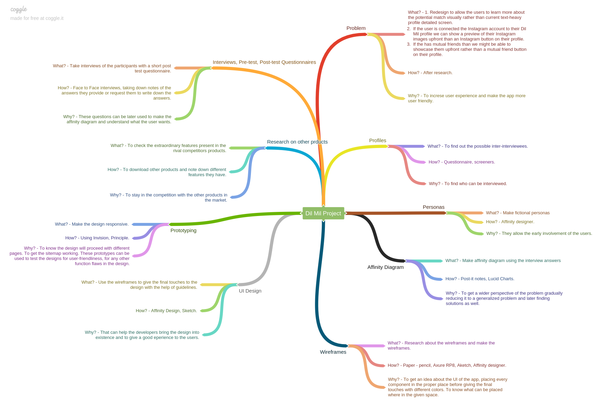
Step Four
Building personas and user profiles.
Personas assist us in gaining a deeper understanding of the
end user. For this exercise, I have chosen to concentrate on
three primary personas derived from the data collected
in the affinity diagrams. These personas also emphasize essential
attributes, objectives, and challenges.
Step Five
Storyboard:
Create a storyboard illustrating a scenario to depict the user
flow of the Dil Mil app. Throughout the scenarios, emoji characters
will be used to demonstrate the app's experience. There will be
three scenarios and storyboards in total, each representing
common issues users encounter while using the Dil Mil app. Scenario One: Problem:
The user wants to check out a profile to swipe through people
and meet new individuals. However, they feel overwhelmed by
the amount of information displayed on the screen. The user
desires a simpler way to grasp essential information without
having to read through lengthy details. Solution:
A concise 30-second video presenting vital user information
would offer a more user-friendly experience. Scenario Two: Problem:
The user wishes to view mutual friends on a user's profile
to gain insights into their social connections. However, the
current display of small, darkened circles as mutual friends
lacks clarity. The user prefers larger images of mutual friends
accompanied by clear labels and their names. Solution:
Enlarge the circles displaying mutual friends' images, include
their names below each image, and clearly label them as mutual
friends at the top. Scenario Three: Problem:
The user wants to view Instagram images on a user's profile
to understand their social activities, preferences, and overall
personality. However, the current presentation combines images
from the app's carousel and Instagram without proper separation
or labels, leading to confusion. Additionally, there's no option
to visit the user's Instagram profile. Solution:
Create a distinct section for Instagram images, separate from
the app's carousel or video section. Include a button allowing
users to visit the other user's Instagram profile for a more
comprehensive understanding.
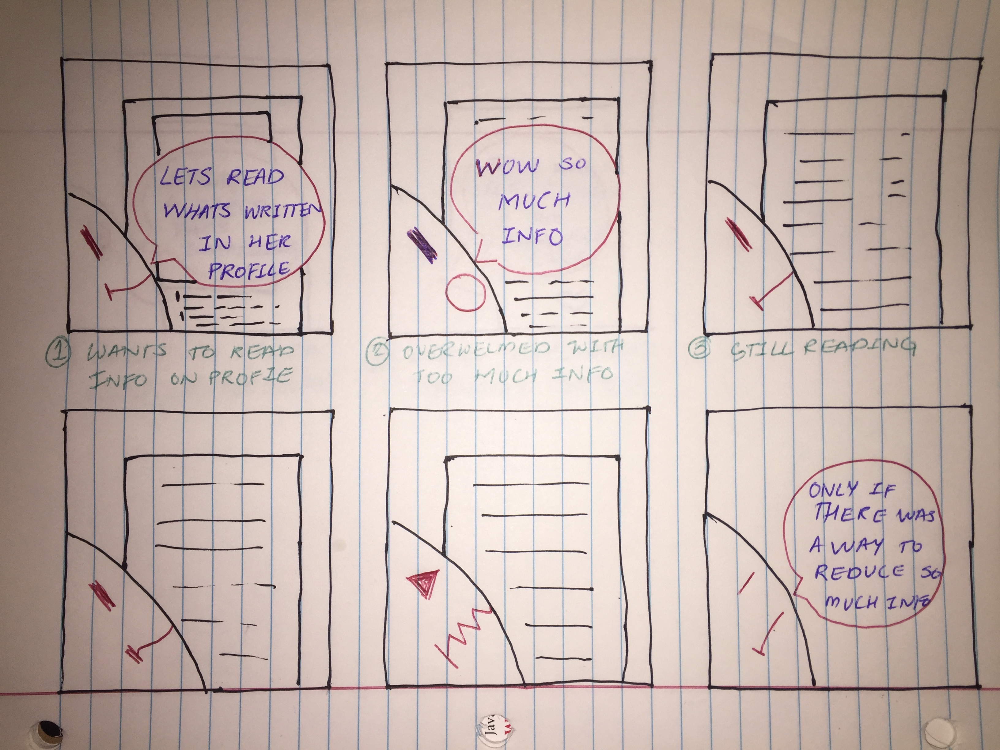
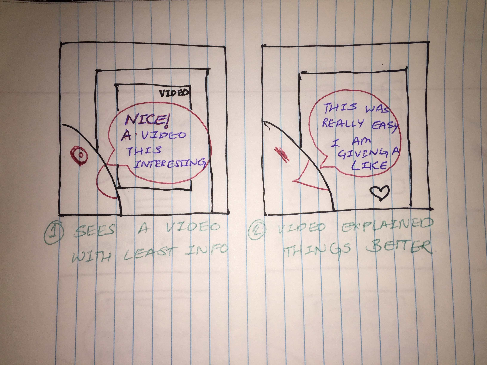
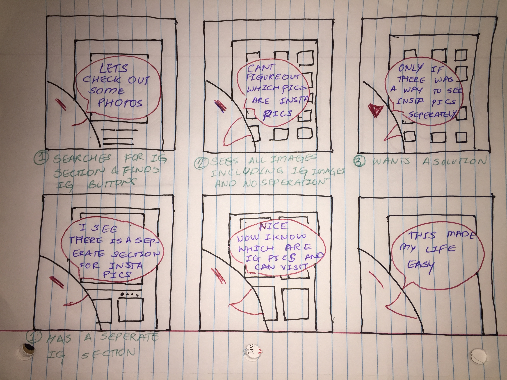
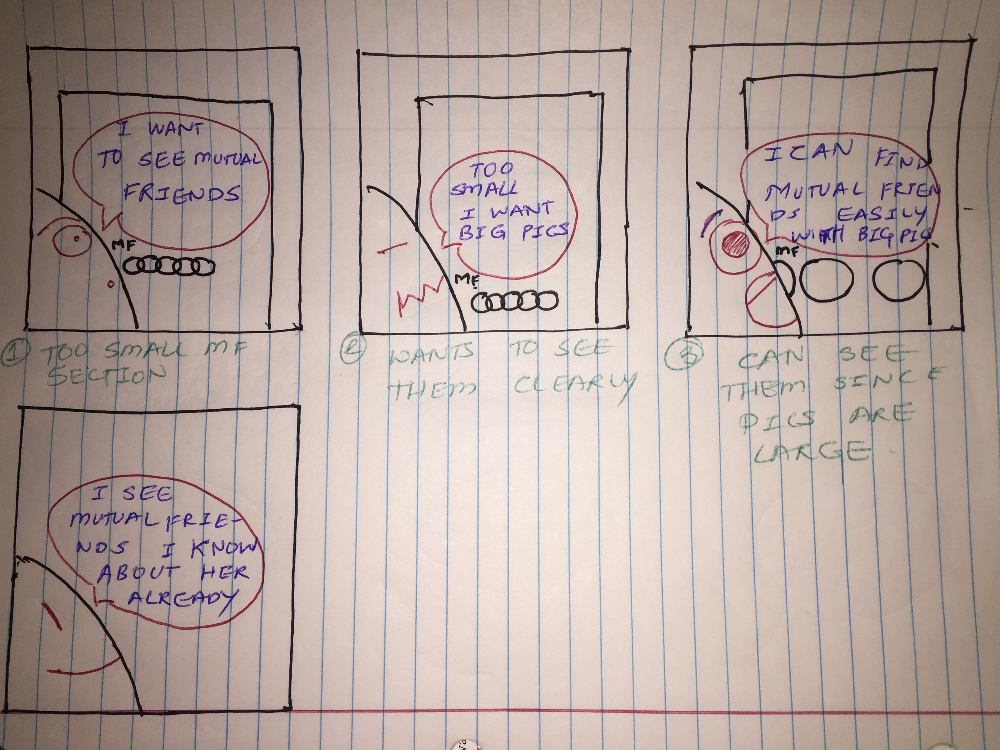
Step Six
Wireframes on Paper:
I quickly sketched the layout with paper and pen. This helped me
grasp the functionality of the mobile application.
It also aided in understanding the connection between
the information architecture or the site map and the
visual design.
The Instagram image section features a grid of 3 to 5 rounded
images on one screen, which can be scrolled through until 10
image slides are viewed. The 10 images can be selected when
linking Instagram to the profile. Clicking on an image opens
a pop-up screen (top right) displaying vital information such
as the name and date posted.
The mutual friends section presents a grid of 3 to 5 circular
images on one screen, with the option to slide through additional
images if there are more mutual friends (bottom left). This section
is positioned directly below the 30-second introduction video.
Excess information on the page will be replaced with a one-time
30-second introductory video discussing the user (top left).
Clicking the video triggers a pop-up, and upon closing it, the
previous screen resurfaces.
Upon request, life events can be showcased, potentially linking
Facebook to display important life events that can be edited
(top right). Circular events will be displayed below the mutual
friends and above the Instagram image section. Each event will
feature an image in a circular shape with a tag below it. Clicking
on a life event triggers a pop-up displaying an enlarged image
with vital information such as the location, tag, and date of
the event.
These images illustrate the iterations undertaken to explore
different page looks, including gradients and variations in
image shapes. Additionally, the images show iterations depicting
frame numbers for clarity.
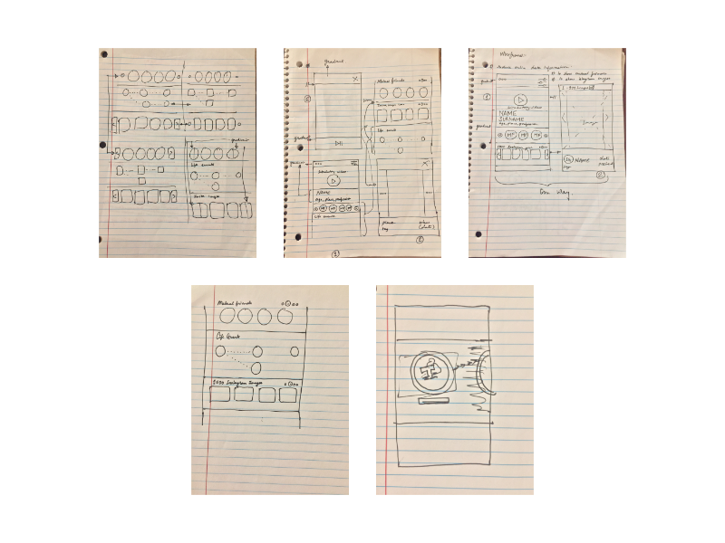
Step Seven
High-fi wireframes.
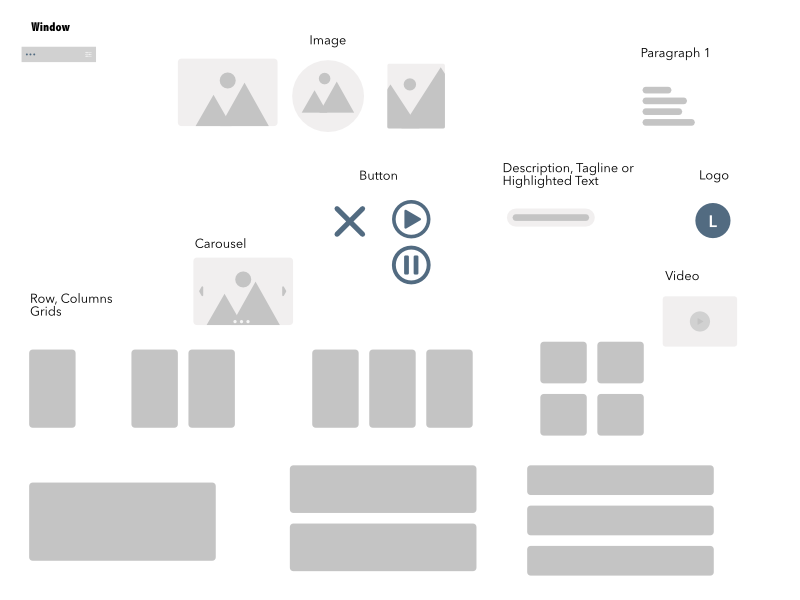
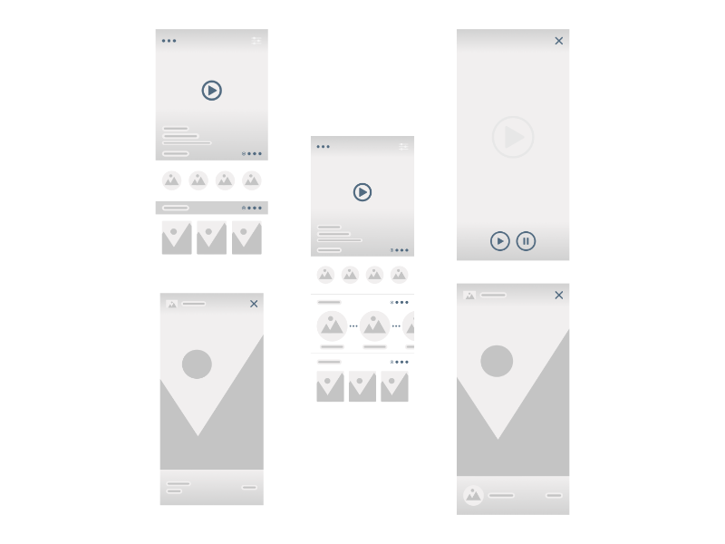
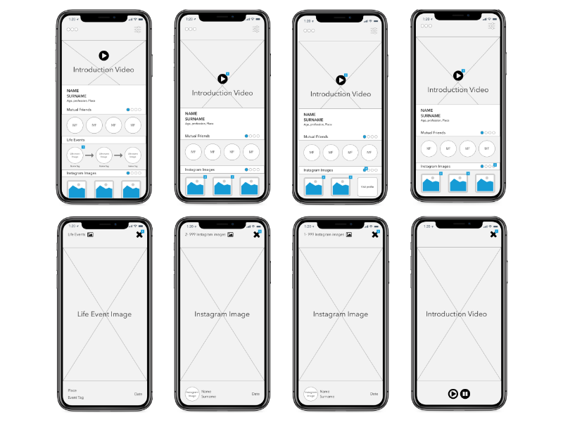
Step Eight
Sitemap of the app serves to understand the sequence of pages.
Before commencing UI design, I created an Information Architecture
or sitemap chart to aid in comprehending the application's structure.
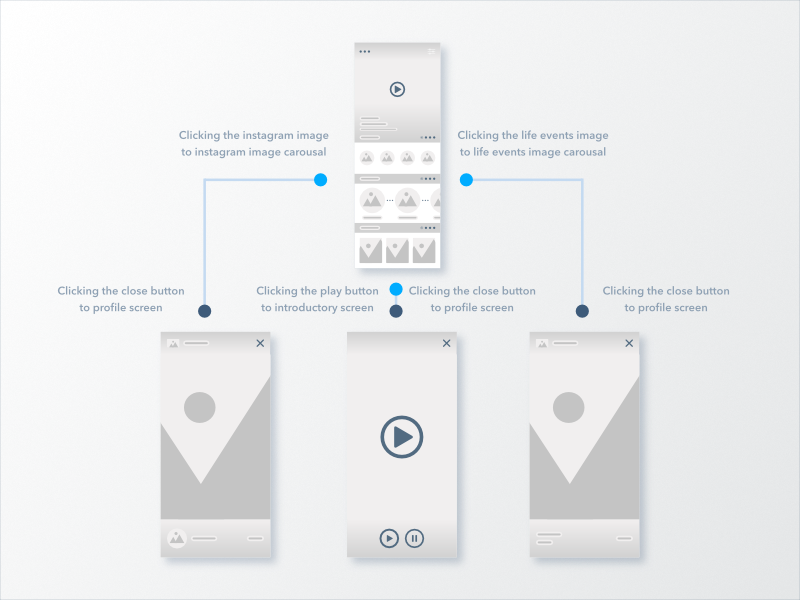
Step Nine
Take a few Guerrilla tests to identify flaws in the design.
It's a 15-minute test where you ask the required questions
to uncover the flaws in the design. The scenario was to navigate
through life events.
The user test was conducted with two male participants. Findings - Moderate
"The life events need to have large circular images with dots in between to show connectivity."
"Need to remove the section blocks and replace them with small lines to differentiate the sections." Findings - Moderate
"I liked the introductory video; it makes it easy to grasp information."
"Almost everything I need is there."
"Simpler UI."
"I like the colors; they give a good feel to the UI."
"Like the life events section."
Step Ten
Making the High-fi User Interface using the suggestions after the Guerrilla test.
I used the Sketch, Affinity Designer application for design. While creating the style
guide and hi-fi mockups, I kept in mind visual design principles like:
Visibility
Proximity
Contrast
Alignment
Grid and Alignment
Scale
Space
Typography
Color Palette Updated designs
Based on the feedback gathered from the tests, I redesigned certain aspects of the application
to improve the user experience.
Added depth to the icons on the screen.
Added drop shadow to the images to give a depth feeling.
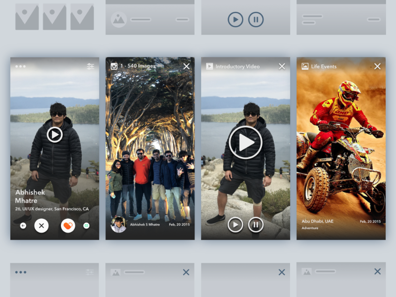
Try the Demo Now
This demo is done in inVision.
Shareholders of the App
Of course, everybody can use this app in their own way but our main audience would be mostly
Indian people in the community, who have access to cell phones, social media or
computers. We feel they are the most susceptible that there is no sure way to distinguish
normal carousel to instagram images, cannot see mutual friends for now even if they see it,
the window or the design is too small, there is too much written information on the screen.
Although we are targeting
younger generation who are looking for life partners or dating, this app can also be useful
to older people who want to retry their luck in thi department. After gathering information
to develop a working prototype, a task walk-through will be conducted at several stages
of the design, firstly to measure the intuitive look and feel of the user interface and
then the actual functionality. We believe that by observing users at various design stages,
we can get firsthand insight about how well they respond to the design.
What could be next?
Spend more time on the micro-interactions to help developers understand how the interactions work.
Interview people across various age groups, and from different backgrounds.